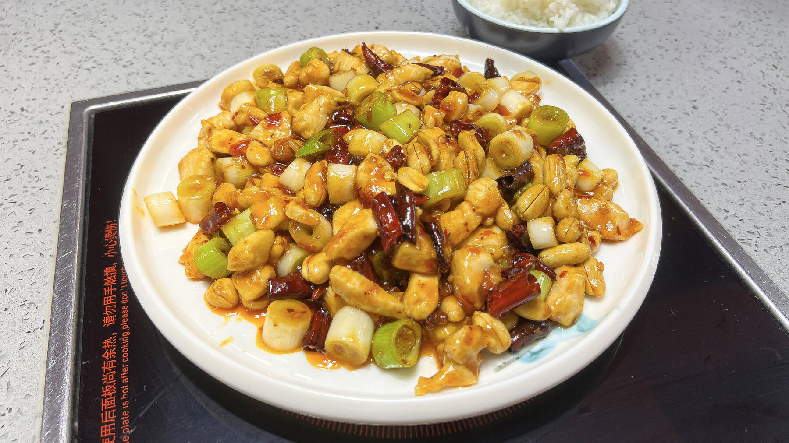

Zurück zur Übersicht
Gong Bao Chicken
Der Sichuan-Klassiker: Hähnchenwürfel mit gerösteten Erdnüssen, Staudensellerie und Chili in würzig-süß-saurer Sauce.
- Zeit
- 25 Min.
- Schwierigkeit
- mittel
- Kategorie
- Asiatisch
- Ernährung
- mit Fleisch
Zutaten
Portionen
Hähnchen
- 300 gHähnchenbrust ohne Haut und Knochen (oder ausgelöstes Keulenfleisch)
- 1 ELHelle Sojasauce
- 1 ELReiswein
- 1 PriseZucker
- 1 ELSpeisestärke
- 2Frühlingszwiebeln
- 100 gStaudensellerie
- 2 ELÖl
- Salz
- 100 gUngesalzene, geröstete Erdnüsse
Chilimischung
- 30 gIngwer, geschält
- 2Knoblauchzehen
- 1rote Chilischote
- Schwarzer Pfeffer aus der Mühle
Sauce
- 1 ELHühnerfond
- 2 ELReisessig
- 2 ELDunkle Sojasauce
- 1 ELHonig
- 1 TLSesamöl
Zubereitung
- Das Hähnchen in 2 cm große Würfel schneiden und in einer Schüssel mit Sojasauce, Reiswein, Zucker und Speisestärke vermischen.
- Frühlingszwiebeln putzen, waschen und schräg in feine Ringe schneiden. Staudensellerie putzen, waschen, trocken tupfen und schräg in kleine Würfel schneiden. Einen Teil der Selleriewürfel zum Garnieren beiseitestellen.
- Für die Chilimischung Ingwer und Knoblauch fein hacken. Die Chili waschen, halbieren, entkernen und schräg in dünne Streifen schneiden. Alles mit etwas Pfeffer in einem Schälchen mischen.
- Alle Zutaten für die Sauce in einer kleinen Schale verrühren.
- Das Öl in einer ausreichend großen Pfanne gleichmäßig verteilen und erhitzen, aber nicht zu stark. Die Chilimischung hineingeben und 15–20 Sekunden umrühren.
- Die Chilimischung an den Rand schieben, die Hähnchenwürfel hineingeben und gleichmäßig verteilen. 2 Minuten braten, ohne sie zu wenden. Dann mit dem Pfannenwender vom Boden lösen, umdrehen und alles zusammen 2 weitere Minuten braten.
- Die Sauce in einer kreisförmigen Bewegung zugießen, 1 Minute verrühren und mit einer Prise Salz würzen.
- Frühlingszwiebeln, Sellerie und Erdnüsse zugeben, gut durchmischen und sofort servieren. Mit den beiseitegestellten Selleriewürfeln garnieren.
Tipp: Dazu passt am besten Reis.